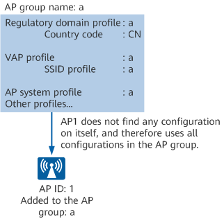
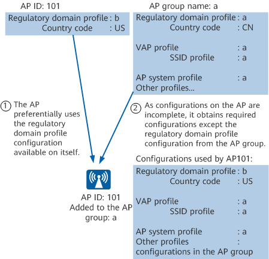

AP Group and AP
To simplify configurations for a large number of APs on a WLAN, you can group them and perform batch configurations as required. However, APs may need different configurations, which cannot be uniformly performed by AP group. Such specific configurations need to be directly performed on each AP.
Each AP must and can join only one AP group when they go online on a WAC. If an AP obtains both AP group and specific configurations from the WAC, the configurations specific to the AP take preference.
- If no configuration is available on an AP, the AP uses the configurations from the AP group.
As shown in Figure 1, the AP with ID 1 does not find any configuration specific to itself. Therefore, it uses all WLAN configurations in the AP group a to which it belongs.
- If there are configurations specific to the AP, the AP uses these configurations preferentially. However, if the configurations are incomplete, the AP obtains the other configurations from the AP group.
As shown in Figure 2, the AP with ID 101 preferentially uses the regulatory domain profile configuration available on itself. The AP obtains other configurations — such as virtual access point (VAP) profile, AP system profile, and other profiles — from the AP group a to which it belongs.
- APs of different models have different capabilities. When they are added to the same AP group, some of the configurations delivered to the AP group do not take effect for APs that do not support them.
Figure 1 Using all configurations in an AP group
Figure 2 Using both specific and AP group configurations